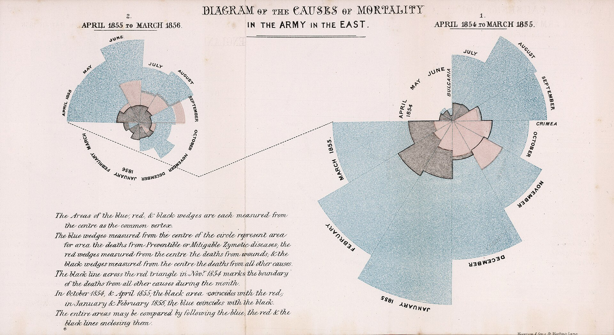

British losses in the Crimean War totalled 21,097. Of those, 16,323 were deaths from disease. Not wounds. Florence Nightingale, who had led the nurses at the army hospital at Scutari, came home and set about making the people in charge see that.
She did not stop at the figures. She designed a picture to show the point at a glance, and directing an agent takes the same discipline.
What she wanted seen
By February 1855 the hospital’s death rate had reached 42 per cent. The building had no ventilation and sat on a damaged sewer, and the deaths fell only after a sanitary commission repaired the sewers and improved the ventilation.
After the war Nightingale “set about producing a persuasive set of statistics.” It took her seven months, because the records were poor. There had been “no standardised or consistent reporting,” and hundreds of men had been buried without their deaths being recorded.
She wanted two things seen. Disease, not battle, had killed most of the army. And when sanitation improved, those deaths fell. Her audience was officials, not statisticians, and she held that diagrams convey ideas “through the eye, which cannot be so readily grasped when contained in figures.”
Each choice serves the message


The rose diagram, which she drew with advice from the statistician William Farr, is a set of decisions. Each one does a job.
- One wedge per month. The official sees when the deaths happened.
- Two roses, side by side. The year before the sanitary repairs sits next to the year after.
- Colour by cause. Blue for preventable disease, red for wounds, black for everything else. Disease and battle can be compared at a glance.
- Area for the death rate. Each wedge shows that month’s deaths per 1,000 soldiers per year, a rate rather than a count, so months with large and small armies compare fairly.
In the first rose, blue covers most of the page. In the second, it has shrunk.
The figures were the same ones that had sat in the records. The design decided what an official would see first.
Ask for the shape first
You ask an agent to add a phone number field to the sign-up form, and the number should be stored with the account. The agent reports that it is done. The field is there. You press Save and the app tells you, cheerfully, “Thanks, you’re signed up.” Nothing on that screen tells you whether the number was stored.
Nightingale spent months working out her shape. You can start with one question to the agent: “What do I need to check to make sure what we have built works?” Ask it to answer with a shape: the rows, the columns, and what each cell would prove.
For the phone field it might propose one row for each field on the form, and three columns: shown on the form, saved with the account, and the test that checks the saving.
Now judge the proposal before anything is filled in. Does it cover what you asked for? Would it show a failure if there was one? This one would. A list of the form’s fields alone would not, because every row would look fine.
Then ask for it filled in.
| Field | On the form | Saved | Test |
|---|---|---|---|
| Name | yes | yes | passed |
| yes | yes | passed | |
| Password | yes | yes | passed |
| Phone number | yes | no | none |
The agent never touched the code that saves the account, so the number was never saved and there was no saving to test. The screen said “signed up.” The table decided what you would see first, and it was the one row that failed.
The same question works elsewhere. For permissions, the agent might propose each page against who can see it. For scheduled jobs, each job against when it last ran.
What would you check about the thing you are building right now, and would the shape your agent proposes show you if it had failed?